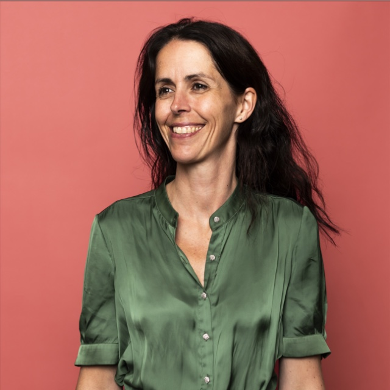
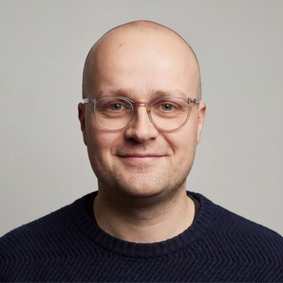
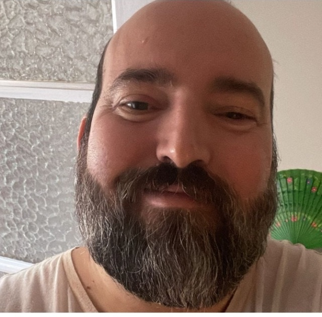
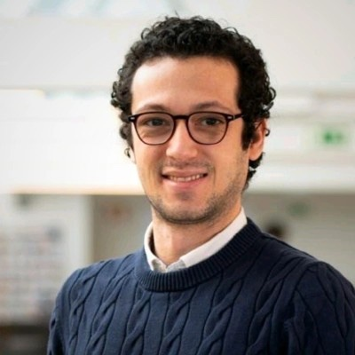

About Montisoro
The vision behind Montisoro. The people who bring it to life.
30–45 minutes · online or on-site
With the right knowledge, structure and technology, you see earlier what is breaking down, act better when things get complex and embed knowledge more sustainably. So that care and performance become one system.
Two meanings. One line. Bring people back. Restore what organizations have lost: connection, safety, perspective.
Montisoro is built on one conviction: sustainable work takes more than policy. It takes principles you apply when things get complex, across people, processes and technology.
We make visible what others miss. Even when it’s uncomfortable. Especially then.
We measure our success not by your dependence, but by your independence.
Technology structures. People connect. Never the other way around.
AI supports. Our experts stay accountable. Always critical. Always explainable.
Earned through results. Kept through transparency.
Sustainable work doesn’t happen on its own. It takes people who dare to look closely, analyze sharply, act with judgment and deploy technology wisely.

LStrong on policy, analytical and tech-savvy, with grit. Laurence combines strategic insight, legal sharpness and lived experience to make absence policy both more human and more effective.

JBuilds the technological backbone of Montisoro. He translates methodology into working systems, from architecture to Casey AI. Where complexity threatens to stall, Jeroen keeps it moving.
Translates Montisoro’s identity into everything you see, read and feel, from digital design to client materials, from campaign to strategy.
Brings structure, calm and humanity to absence journeys. Els guides employees and organizations from first follow-up to sustainable return to work.
Combines experience as a stress and burnout coach, career counselor and outplacement guide with a warm, structured approach to reintegration.

RA nurse with warmth, clinical sharpness and grit. Rico works closely with occupational medicine and brings a perspective that makes the difference on the work floor.
An experienced occupational therapist and trainer who helps organizations implement a Culture of Care, with a strong focus on practical applicability and lasting behavioral change.

ADesigns and builds the intelligence behind Casey AI. He translates the CEO’s vision, expertise and field knowledge into advanced Agentic AI frameworks and provides the technical architecture that lets Casey learn, reason and act.
Responsible for building, securing, monitoring and scaling the AWS cloud infrastructure of Storm and Casey AI.
01
Five months of silence. No support. No real landing after 19 years of engagement.
02
Her manager wanted to do more. He didn't know how. Not out of unwillingness, but because the role was missing.
03
"People rarely fall out from illness alone. They also fall out on connection, safety and perspective."
04
That role was missing. In too many organizations. So Laurence decided to build it herself.
See how Montisoro strengthens your approach, from the first day of absence to sustainable return to work.